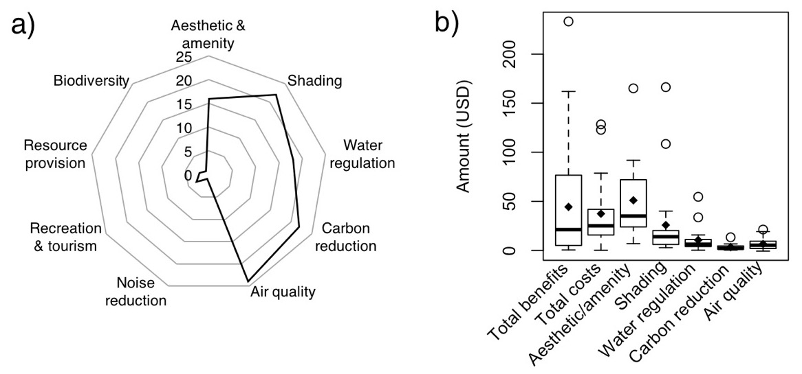
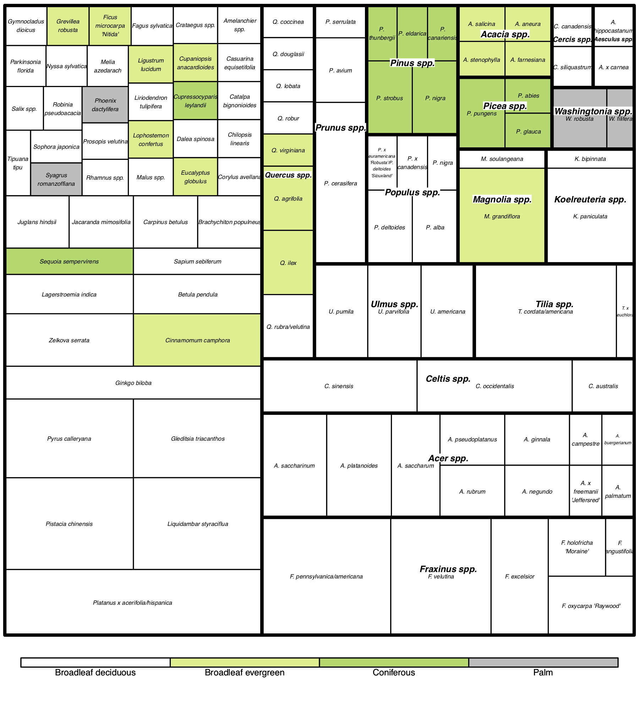
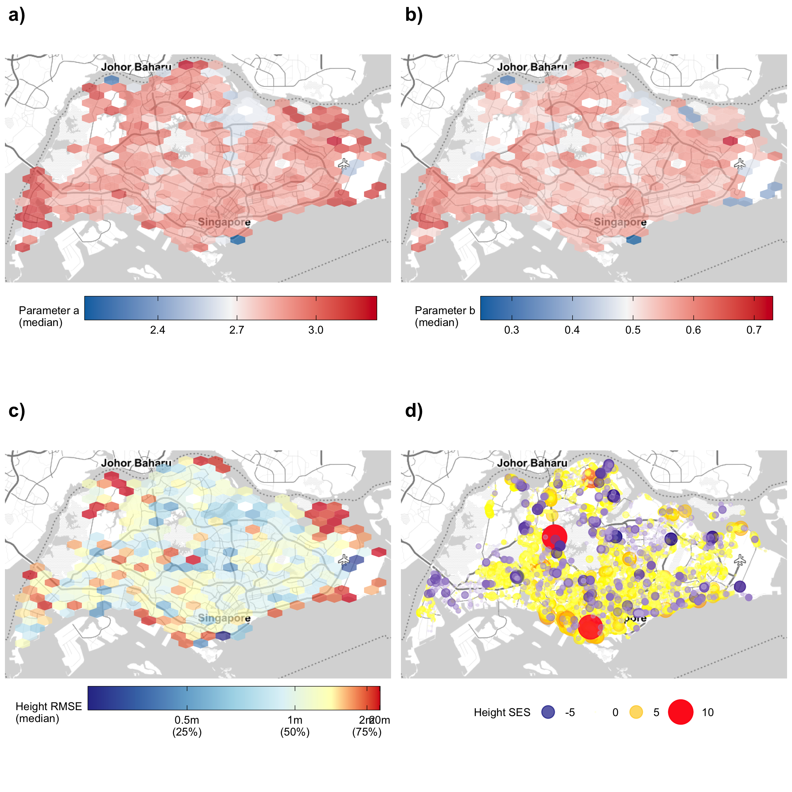
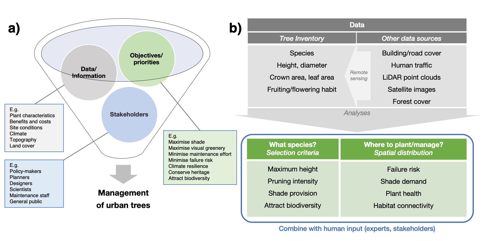

The Performance of City Trees
 Commonwealth region, Singapore. Photo by Phillip Urech, 2017.
Commonwealth region, Singapore. Photo by Phillip Urech, 2017.
Trees are often the largest components of landscape greenery, and can help enhance the environmental quality of city landscapes. For example, trees can lower temperatures by providing shade, and reduce the risk of flooding by intercepting rainfall. Such benefits accumulate across wider areas, producing substantial effects that can help make cities more liveable and adaptable to climate change. Trees are thus a form of ‘natural capital’ that produce value for people.

(a) Benefits associated with individual trees and how often they are assessed, as well as (b) their corresponding value in monetary terms. Figure from Song et al. (2018).

Species distribution of benefit–cost assessments performed worldwide. Figure from Song et al. (2018).
Many cities have started to assess the status and health of these natural capital assets, which is an important step to incorporate the environment into holistic, national-scale planning. Many of the downstream effects associated with trees rely on their size and structure, which varies between species and changes over time. For practical purposes, however, measuring these multiple dimensions is usually not possible. Such values may have to be estimated indirectly using allometric relationships between the quantities of interest and easily-measured parameters such as a tree’s trunk diameter (see prototype web application to explore data and allometric models, and R package allometree for code to develop such allometric equations).

Street trees in Singapore (a-c) mapped according to summarised metrics within hexagonal regions, and (d) mapped individually according to the extent that they are abnormally taller/shorter than predicted by their measured diameter. Figure from Song et al. (2020).
Rapid advances in remote sensing may soon reduce the manual effort required for data collection, and shift research and development toward real-time monitoring for tree management. However, systems and workflows will need to evolve to take advantage of such innovations. Work is needed to streamline data pipelines for analyses, and to integrate multiple datasets and objectives effectively for decision-making.

Examples showing (a) key inputs required for urban tree management, and (b) data sources that can supplement inventory data for urban tree management. Figure from Song et al. (2020).